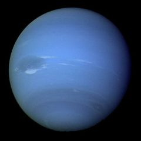

70% всієї площі Венери — рівнини, 20% — низини і 10% — гірські райони. Хмарний шар настільки товстий, юз поверхні Венери не можна почити Сонця.
Марс
 Марс був богом війни у стародавніх римлян. Відстань його від Сонця — 227,7 млн. кілометрів.
Марс був богом війни у стародавніх римлян. Відстань його від Сонця — 227,7 млн. кілометрів.
Довгий час вважалося, що на цій планеті найбільш вірогідне існування життя. Із середини 60-х років до 80-х космічні зонди «Марінер» (США), серія «Марс» (СРСР), «Вікінг 1 і 2» (США) і «Фобос» (СРСР) досліджували Марс. Зонди не виявили ніяких доказів життя, але ж усе-таки стало очевидно, що Марс чимось схожий на Землю. Наприклад, атмосфера Марса в основному складається з діоксиду вуглецю (як на Венері), але є трохи і кисню й азоту (як на Землі). В атмосфері Марса присутня вода, але у порівнянні із Землею це лиш 0,001%. Проте цього досить, щоб конденсувати і формувати хмари і туман.
 Дні на Марсі майже такої ж довготи, як і на Землі — 24 години 37 хвилин. Але оскільки Марс далі від Сонця, йому потрібно для проходження про своїй орбіті вдвічі більше часу, ніж на Землі, — 687 земних днів. Вісь Марса нахилена майже під тим же кутом, що й у Землі, звідси і пори року, щоправда, літня температура досягає лише —21 °С, а зимова опускається до —124 °С, заморожуючи, діоксид вуглецю у полярних районах Марса до льоду.
Дні на Марсі майже такої ж довготи, як і на Землі — 24 години 37 хвилин. Але оскільки Марс далі від Сонця, йому потрібно для проходження про своїй орбіті вдвічі більше часу, ніж на Землі, — 687 земних днів. Вісь Марса нахилена майже під тим же кутом, що й у Землі, звідси і пори року, щоправда, літня температура досягає лише —21 °С, а зимова опускається до —124 °С, заморожуючи, діоксид вуглецю у полярних районах Марса до льоду.
Поверхня Марса здається порізаною колись в далекому минулому стрімкими потоками. Багато шо нагадує долини, берегові лінії, русла річок і острови. Один з каньйонів Марса такий довгий, що міг би перетнути в довжину територію США.

На Марсі один з найбільших вулканів Сонячної системи — вулкан Олімп. Його ширина біля основи понад 700 км і більш як 23 км висота. На Землі він був би вдвічі більшим від Евереста. Червона поверхня Марса — це результат залізооксидного пилу, який вкриває більшу частину планети. Ядро Марса менше земного, але більше місячного і складається із заліза і нікелю.
Сила гравітації Марса складає 2/5 гравітації Землі.
Марс вдвічі менший за Землю і має два супутники. Це невеликі астероїди, спіймані притяганням Марса. Вони називаються Фобос і Деймос.

Місяць
 Місяць — найближчий сусід у космосі. Відстань від Землі до Місяця — 384,4 тис. кілометрів.
Місяць — найближчий сусід у космосі. Відстань від Землі до Місяця — 384,4 тис. кілометрів.
Римською богинею, що уособлювала Місяць, вважалася Діана. По камінню і ґрунту, які були доставлені з Місяця на Землю, вчені визначили, що після того як 5 мільярдів років тому сформувалася Сонячна система, розплавлена поверхня Місяця остигла. Потім Місяць зазнав бомбардувань метеорів та інших об'єктів, вибухи стали причиною виникнення кратерів і розломів до пилу твердої кори. Величезні метеорити створили басейни шириною в сотні кілометрів. Вулканічна діяльність Місяця і важкі метеорні «дощі» припинилися близько 3 мільярдів років тому, залишивши позбавлену життя оболонку. Зараз Місяць в основному має такий же вигляд, як і в ті далекі часи. Оскільки на Місяці нема атмосфери, там нема і дощів. Місяць рухається по орбіті навколо Землі. Але що утримує його? Чому він не падає і не летить у космос?
 Земля має на Місяць гравітаційний вплив, тому Місяць притягується до Землі замість того, щоб зірватися із своєї орбіти і полетіти. Щоб зрозуміти, чому Місяць «не падає», ви повинні дізнатися, що таке інерція.
Земля має на Місяць гравітаційний вплив, тому Місяць притягується до Землі замість того, щоб зірватися із своєї орбіти і полетіти. Щоб зрозуміти, чому Місяць «не падає», ви повинні дізнатися, що таке інерція.

Один із законів руху Ньютона говорить, що поки сила діє на тіло, яке рухається, воно завжди рухатиметься по прямий. Це і є інерція. Результатом прагнення рухатися по прямій лінії (інерція) і гравітаційної сили Землі і є обертання Місяця навколо нашої планети.
Юпітер
 Юпітер був головним богом стародавніх римлян. Відстань до Сонця — 777,6 млн. кілометрів.
Юпітер був головним богом стародавніх римлян. Відстань до Сонця — 777,6 млн. кілометрів.
Це найбільша планета в нашій Сонячної системі, її маса в 300 разів більша земної. Така кількість маси означає величезну гравітаційну силу. Це дозволяє Юпітеру мати, у крайньому випадку, 16 супутників. Вона має також невеликі набори кілець.
 Космічні зонди почали вивчення Юпітера в 1972 році. Після проходження астероїдного пояса, зонди відправили на Землю зображення кулі, що обертається, з рідкого водню, оточеної атмосферою, що складається в основному з метану і аміаку.
Космічні зонди почали вивчення Юпітера в 1972 році. Після проходження астероїдного пояса, зонди відправили на Землю зображення кулі, що обертається, з рідкого водню, оточеної атмосферою, що складається в основному з метану і аміаку.
Температура у твердому ядрі Юпітера — +30 500 °С. Але на рівні хмар температура всього лиш 160 °С. Дані з Юпітера засвідчують те, що там постійний шторм, який бачимо на фотографіях як червону пляму. Хмари, що обертаються, оточують Велику червону пляму, таку довгу і широку, як три Землі.
День на Юпітері дещо менший 10 годин. Проте цій планеті потрібно майже 12 земних років, щоб пройти по своїх орбіті навколо Сонця.

Супутники Юпітера
 Чотири найбільші супутники Юпітера, що називаються супутниками Галілея, вперше відкриті вченим у 1620 році. На відміну від Юпітера вони тверді: з льоду з камінням або з розплавленого каменю і вулканів. Ганімед — найбільший супутник у Сонячній системі, такого ж розміру, як Меркурій. Найменший супутник — Європа — вкритий замерзлою водою. Біологи вважають, що в морях під льодами можуть існувати деякі форми життя. Навколо Юпітера рухаються також скупчення темних і світлих хмар із аміаку і кришталиків води. Космічний корабель «Вояджер» надіслав фотографії двох кілець пилу, що оточують планету. Невідомо, з чого складаються ці скупчення — з уламків давніх зіткнень чи це просто частки і камені, притягнуті гравітаційною силою Юпітера.
Чотири найбільші супутники Юпітера, що називаються супутниками Галілея, вперше відкриті вченим у 1620 році. На відміну від Юпітера вони тверді: з льоду з камінням або з розплавленого каменю і вулканів. Ганімед — найбільший супутник у Сонячній системі, такого ж розміру, як Меркурій. Найменший супутник — Європа — вкритий замерзлою водою. Біологи вважають, що в морях під льодами можуть існувати деякі форми життя. Навколо Юпітера рухаються також скупчення темних і світлих хмар із аміаку і кришталиків води. Космічний корабель «Вояджер» надіслав фотографії двох кілець пилу, що оточують планету. Невідомо, з чого складаються ці скупчення — з уламків давніх зіткнень чи це просто частки і камені, притягнуті гравітаційною силою Юпітера.
Сатурн
 Сатурн був богом врожаю у стародавніх римлян. Відстань до Сонця — 1425,6 млн. кілометрів.
Сатурн був богом врожаю у стародавніх римлян. Відстань до Сонця — 1425,6 млн. кілометрів.
Подібно Юпітеру, Сатурн газоподібна планета, що складається з водню. На її поверхню ллють аміачні дощі. В атмосфері Сатурна метану більше ніж у Юпітера.
 Сатурн — планета величезна, друга за розмірами після Юпітера і в 9,5 рази більша від Землі. Температура на рівні хмар — льодова — 180 °С.
Сатурн — планета величезна, друга за розмірами після Юпітера і в 9,5 рази більша від Землі. Температура на рівні хмар — льодова — 180 °С.
На відміну від Юпітера Сатурн оточений тисячами кілець кольору паленого цукру, які утримуються на одному місці гравітаційним притяганням. Ці кільця складаються з частинок льоду і каміння розміром від пилинок до валунів. Учені не впевнені, ці кільця — залишки матерії, які не ввійшли до складу планети, чи це супутник, розірваний гравітаційною силою Сатурна, яка ненабагато більша земної.
День на Сатурні довший, ніж на Юпітері, — 10 годин 39 хвилин. Через велику віддаленість від Сонця йому потрібно 30 земних років, щоб зробити повний оберт навколо нього.
Вчені передбачають, що метан присутній також і на Титані, найбільшому з 21 супутника Сатурна, — у твердому, рідкому і газоподібному стані, як вода на Землі. На Титані сніг чи дощ можуть випадати з метанових хмар. Ріки метану біжать по метанових льодовиках. Атмосфера Титану могла бути подібною до земної 4 млрд. років тому. Проте його температура дуже низька для існування життя.

Уран
 У стародавніх римлян Уран був богом неба. Відстань до Сонця – 2868,1 млн. кілометрів. Хоч ця планета булла відкрита Вільямом Гершелем ще в 1781 р., Але про неї було мало що відомо поки «Вояджер 2» не пролетів повз планету у 1986 р., через 4,5 року після відвідання Сатурна.
У стародавніх римлян Уран був богом неба. Відстань до Сонця – 2868,1 млн. кілометрів. Хоч ця планета булла відкрита Вільямом Гершелем ще в 1781 р., Але про неї було мало що відомо поки «Вояджер 2» не пролетів повз планету у 1986 р., через 4,5 року після відвідання Сатурна.
Уран – третя за величиною планета, вона в 4 рази більша за Землю. Газоподібна планета має атмосферу, схожу на атмосферу Юпітера і Сатурна — в основному складається з водню, гелію, аміаку, метану. Метан надає Урану блакитно-зеленуватого забарвлення. Температура на рівні хмар — 200 °С.
 Вісь Урана — не центр планети, вона нахилена більше ніж у інших планет — під кутом 12°. Період обертання Урана навколо Сонця — 84 роки. В результаті північний полюс Урана обернений до Сонця протягом 42 років — там день. Потім те ж саме відбувається на південному полюсі. Дні на Урані короткі — ледь більше 17 земних годин.
Вісь Урана — не центр планети, вона нахилена більше ніж у інших планет — під кутом 12°. Період обертання Урана навколо Сонця — 84 роки. В результаті північний полюс Урана обернений до Сонця протягом 42 років — там день. Потім те ж саме відбувається на південному полюсі. Дні на Урані короткі — ледь більше 17 земних годин.
«Вояджер 2» визначив, що Уран оточений, у крайньому випадку, 11 темними кільцями і на його орбіті не менше 15 кам'яно-льодяних супутників. Ця планета дає загадковий ультрафіолетовий блиск, що називається «електросвітінням», її гравітація дещо сильніша земної.

Нептун

Ця планета названа на честь римського бога води. Відстань до Сонця — 4494,1 млн. кілометрів.
Пройшовши біля Урана, «Вояджер 2» досяг Нептуна у 1989 році — остання зупинка за 12-річну мандрівку в космосі. Дані, надіслані на Землю, засвідчують, що у Нептуна не менше 8 супутників і 4 кільця з каменю, пилу і льоду.
 Його супутник — Тритон — більше Плутона, він один з декількох супутників у Сонячній системі зі своєю власною атмосферою (з азоту та інших газів). На Тритоні є також льодові океани (з температурою — 235 °С) і гейзери, що викидають азот. Вчені вважають, що Тритон колись міг бути самостійною планетою, але гравітація Нептуна, яка в 1,5 рази сильніша земної, притягла його в свою орбіту мільйон років тому. Тритон рухається навколо Нептуна у напрямку, протилежному рухові самої планети.
Його супутник — Тритон — більше Плутона, він один з декількох супутників у Сонячній системі зі своєю власною атмосферою (з азоту та інших газів). На Тритоні є також льодові океани (з температурою — 235 °С) і гейзери, що викидають азот. Вчені вважають, що Тритон колись міг бути самостійною планетою, але гравітація Нептуна, яка в 1,5 рази сильніша земної, притягла його в свою орбіту мільйон років тому. Тритон рухається навколо Нептуна у напрямку, протилежному рухові самої планети.
Менший супутник — Нереїда — відкритий у 1949 році. Третім за величиною супутником є Наяда, що має всього 400 км у поперечнику.
Нептун робить повний оберт навколо Сонця по своїй орбіті за 165 земних років. День на Нептуні триває 16 годин. Нептун у 4 рази більший Землі і дещо менший Урану. Його атмосфера складається з водню, гелію і метану. Погодні умови дуже сурові — з вітрами (швидкість до 640 км/год) і Великою темною плямою — постійним ураганом, як і на Юпітері.

Плутон
 Ця планета названа на честь грецького бога підземного царства. Відстань до Сонця — 5896,9 млн. кілометрів.
Ця планета названа на честь грецького бога підземного царства. Відстань до Сонця — 5896,9 млн. кілометрів.
Плутон був описаний як «сніжна грудка» — суміш замерзлого метану і аміаку з температурою на поверхні — 237 °С. Атмосфери у Плутона нема. Це найменша планета Сонячної системи — розміром із земний Місяць. Орбіта Плутона не постійна і інколи заходить на орбіту Нептуна. Наприклад, у період між 1979 і 1999 роками Нептун був зовнішньою планетою Сонячній системі, а не Плутон. Плутон так повільно обертається навколо своєї осі, що один день дорівнює шести денним і ще 9 годин 18 хвилин. Під час плутонового дня Сатурн з'являється на його небі як яскрава зірка, адже під час присмеркового дня видні лише зорі в небі Плутона. Цій планеті потрібно 250 земних літ, щоб зробити один оберт навколо Сонця. У 1978 р. відкрито єдиний супутник — Харон, який вдвічі менший самого Плутона.
Періоди обертань Харона і Плутона співпадають, тому супутник ніколи не сходить і не заходить відносно горизонту, він спостерігається як вічно висячий у небі на одному місці. Цей супутник названий на честь перевізника душ померлих у загробний світ. Вивчаючи темні і світлі візерунки Харона, вчені дійшли висновку, що він складається в основному з води, льоду і каменю з невеликою кількістю метану або без нього. Можливо, колись на Хароні, як і на Плутоні, був метан, але потім зник, оскільки у Харона дуже слабка гравітація. Гравітаційне притягання Плутона — близько 1/10 від сили земної гравітації.
Астрономи дуже зацікавлені у вивченні Плутона і Харона, оскільки ними висунута версія про те, що ця планета і супутник мають ранню стадію розвитку усіх планет нашої Сонячної системи. І чим більше ми дізнаємося про відношення між Плутоном і його супутником, тим більше дізнаємося про всі планети, включаючи і нашу.

.jpg)